Getting system hardware info
There are multiple commands which can be used to get hardware info of any particular linux system.
lshw command provides full hardware info of the system.
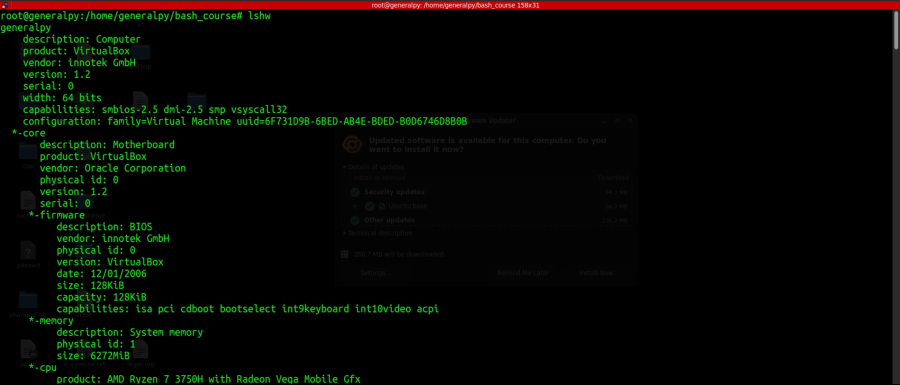
We can get this info in different formats to by using -json for json and -html for html.
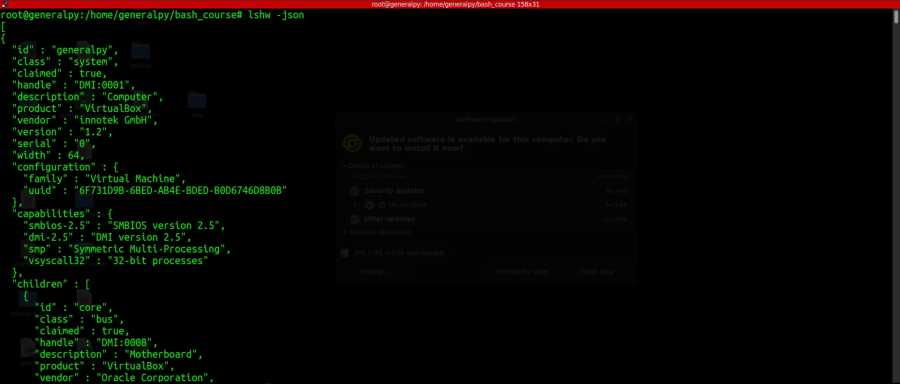
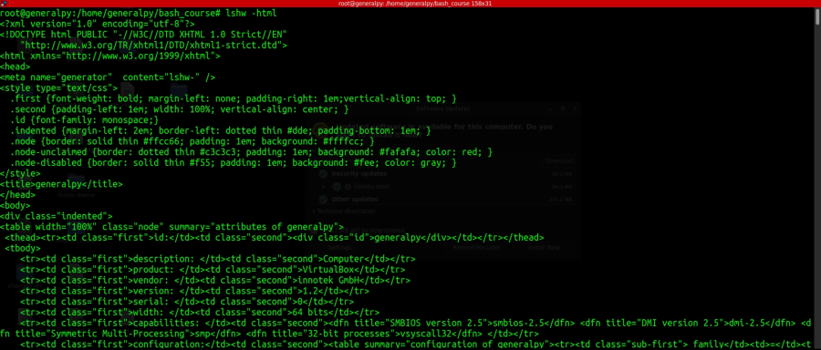
To get a short summary of this info use -short flag.
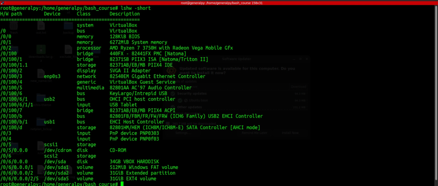
-C flag can be used to specify class of the info we are trying to get with lshw. For example -C with memory will give memory info and with cpu will give cpu info.
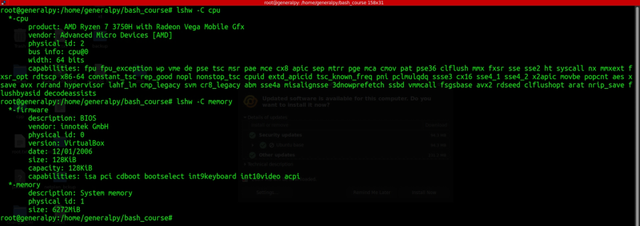
lscpu can be used to get info about cpu.
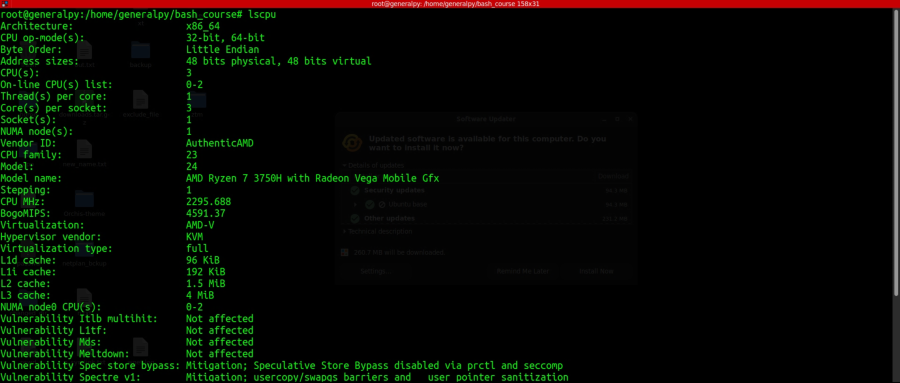
dmidecode command with -t memory will give main memory info.
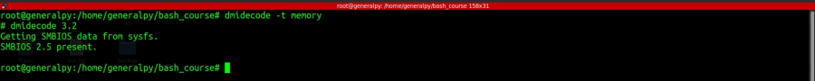
Virtual box output will be different.
lspci can be used to get all info about pci devices.
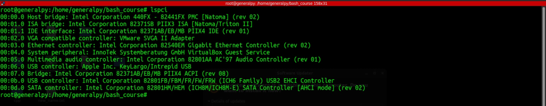
lsusb can be used to get all info about usb devices.
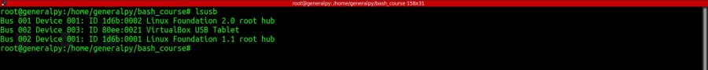
lshw -C disk will show disk information.

To get detailed info about the hard drive use
fdisk -l [disk_name]
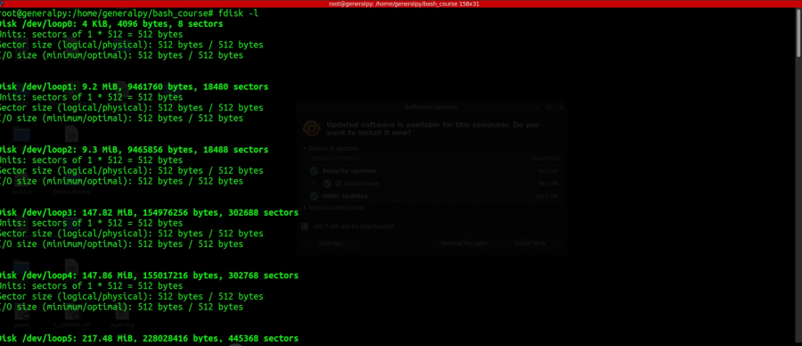
hdparm can be used to get and set parameters for a sata disk.
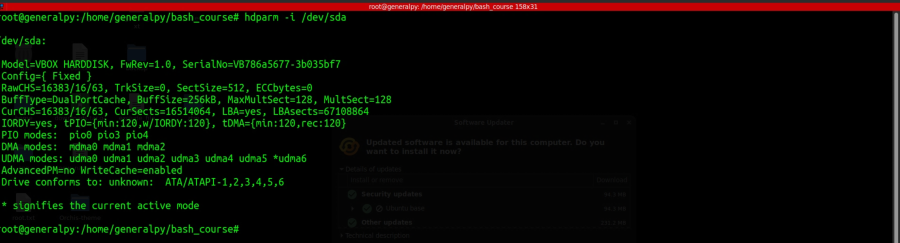
hdparm can also be used to benchmark disks.
hdparm -t --direct <disk>
Here -t stands for timing benchmark and --direct means hdparm will bypass the page cache and direct write to disk, means raw input.
Use iw list to list wireless devices.
The info we got till now came from different files which were stored in /proc directory which is a virtual file system.
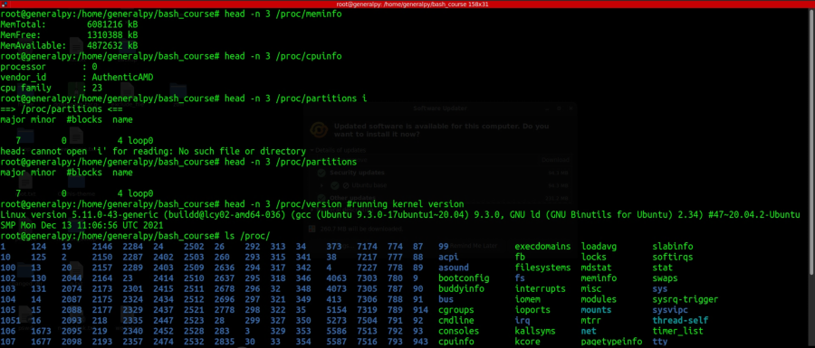
acpi is a tool which can be used to get battery info. It is not installed by default in ubuntu.